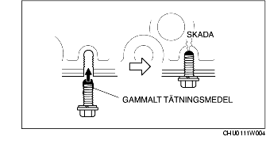

DEMONTERING/MONTERING AV OLJETRÅGET [ZJ, Z6]
B3E011110040W01
-
Varni ng
-
• Demontera och montera alla delar när motorn är kall, annars kan de orsaka allvarliga brännskador eller andra allvarliga personskador.
-
• Ett fordon som lyfts upp men som inte stöttats upp på säkert sätt innebär livsfara. Det kan halka eller falla ner, och orsaka dödsfall eller allvarliga personskador. Arbeta aldrig under ett fordon som lyfts upp om fordonet inte stöttats upp med säkerhetsbockar eller liknande.
-
• Långvarig utsättning för använd motorolja har gett upphov till hudcancer på möss i laboratorier. Skydda därför din hud genom att tvätta dig med tvål och vatten omedelbart efter du arbetat med motorolja.
1. Demontera batterikåpan. (Se DEMONTERING/MONTERING AV BATTERI [ZJ, Z6].)
2. Lossa batteriets minuskabel.
3. Ta bort den undre kåpan.
4. Tappa ur motoroljan. (Se BYTE AV MOTOROLJA [ZJ, Z6].)
5. Demontera i den ordning som anges i tabellen.
.
|
1
|
Oljetråg
|
|
2
|
Oljesil
|
|
3
|
O-ring
|
6. Montera i omvänd ordning mot demonteringen.
7. Fyll på motorolja. (Se BYTE AV MOTOROLJA [ZJ, Z6].)
8. Starta motorn och kontrollera att ingen olja läcker ut från de delar du arbetat med.
-
• Om du upptäcker en oljeläcka, lokalisera orsaken och reparera eller byt ut den aktuella delen.
9. Kontrollera oljenivån. (Se KONTROLL AV OLJENIVÅN I MOTORN [ZJ, Z6].)
10. Montera den undre kåpan.
Observera vid demontering av oljetråg
1. Lossa oljetråget med hjälp av separationsverktyget.
Observera vid montering av oljetråg
-
Försiktigt
-
• Stryk på silikontätningen i en obruten linje runt hela omkretsen.
-
• Montera oljetråget inom 5 minuter efter att du strök på silikontätningen.
-
• Om du använder bultar med tätningsmedel på ytan, kan huset spricka.

1. Rengör huset och oljetråget och ta bort all olja, smuts och annat främmande material.
2. Om du återanvänder oljetrågets monteringsbultar, rengör dem från allt gammalt tätningsmedel.
3. Stryk silikonbaserat tätningsmedel på de områden som visas på bilden.
-
Tjocklek
-
2,0—6,0 mm {0,08—0,24 in}
4. Dra åt bultarna i den ordning bilden visar.
-
Åtdragningsmoment
-
7,8—10,8 Nm {80-110 kpcm, 69,1-95,5 inlbf}